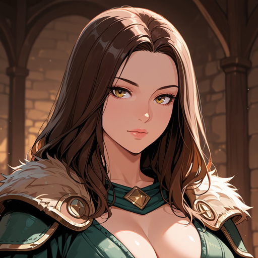

Ireena Kolyana
- Aliases: Ireena
- NpcStatus: Unknown

- Ze is de geadopteerde dochter van de burgemeester van Barovia, Kolian Idigrovich.
- Strahd is geïnteresseerd in Ireena omdat ze blijkbaar de ziel heeft van zijn geliefde uit het verleden.
- Strahd heeft ons gevraagd om Ireena naar hem te brengen.
- Groep heeft Ireena en haar broer Izmark eerder naar Vallaki gebracht voor hun veiligheid.
- Onderweg naar Vallaki vonden ze het lijk van Izmark, Ireena's broer.
- In Vallaki blijkt dat Ireena opgesloten was in de kamer van Izek (een handlanger van de burgemeester).
- Izek had meer dan 150 porseleinen poppen van Ireena laten maken bij de speelgoedmaker.
- Toen groep bij het huis van de burgemeester kwamen, bleek Ireena al overhandigd te zijn aan Strahd's dienaren.
- Ireena al onderweg naar Strahd's kasteel.